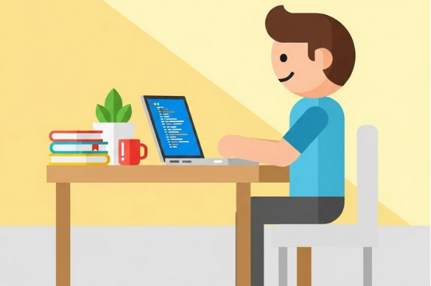

Projecten
Hieronder zijn al mijn projecten te vinden waar ik in het verleden aan heb gewerkt.
Project 1: Hotelsimulatie
Het eerste project waar ik aan heb meegewerkt is een hotelsimulatie voor een AI stakeholder genaamd John Karma. Voor dit project heb ik samen met 4 andere studenten een simulatie gemaakt waarin een .json-bestand kan worden geüpload en een scenario kan worden geselecteerd. Aan de hand hiervan stromen er gasten binnen en worden die verdeeld over de kamers.